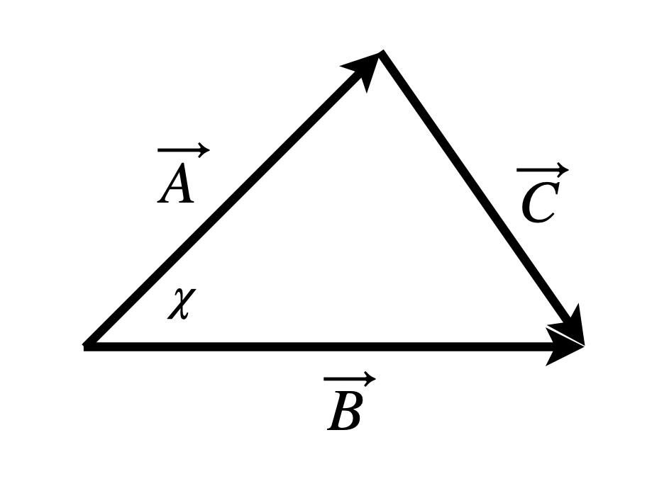
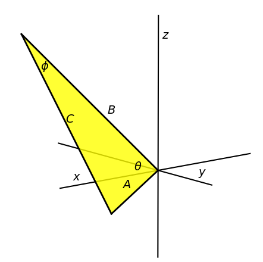
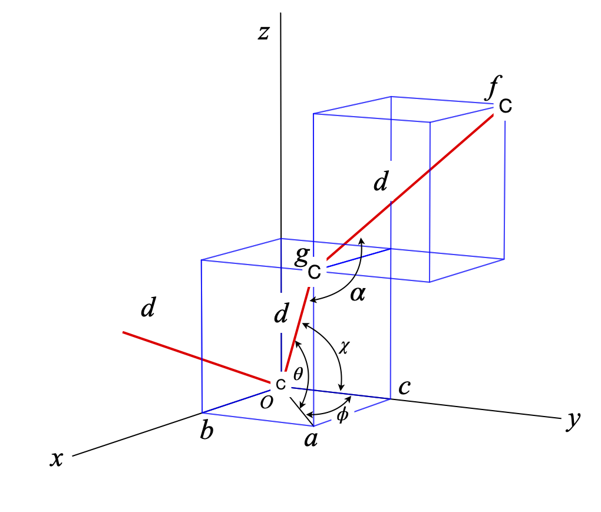
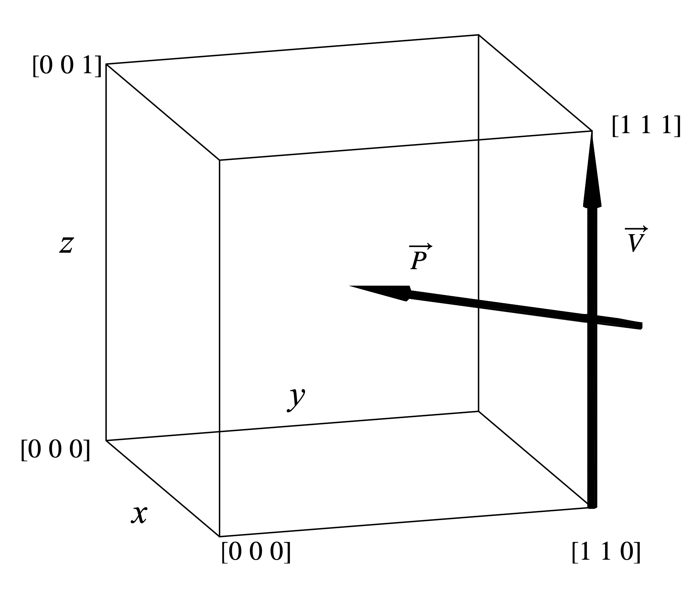
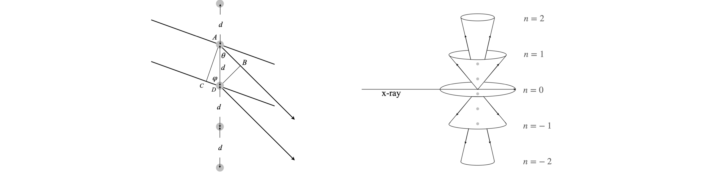
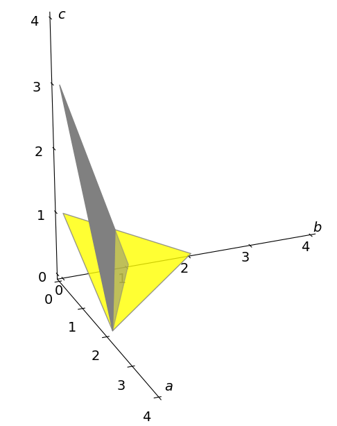
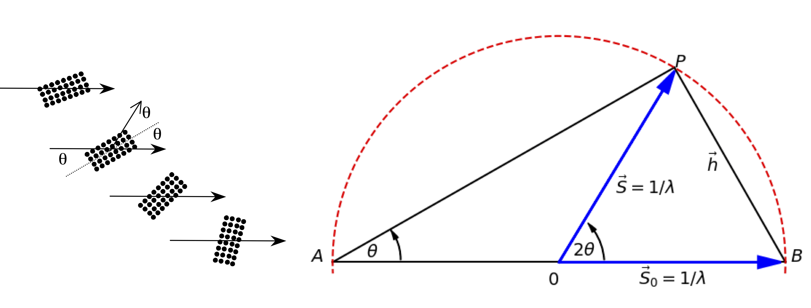
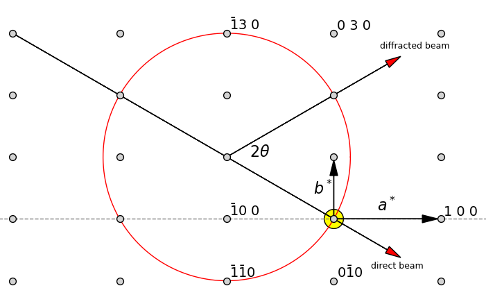

Questions 1 - 24
Contents
Questions 1 - 24#
Q1 Orientation#
You go mountain biking from home and travel due north along a track for \(2\) km then north-east for another \(3\) km.
(a) Represent your journey graphically, and work out how far and in what direction you are from home as the crow flies. You may find it useful to use the cosine formula, \(c^2 = a^2 + b^2 - 2ab\cos(\alpha)\) and the law of sines, \(ab \sin(\alpha) = bc \sin(\beta) = ac \sin(\chi)\). (\(\alpha\) is the angle opposite \(a,\; \beta\) opposite \(b\) etc.).
(b) Work out the result using Python to do the arithmetic.
(c) Repeat the calculation in matrix form.
Strategy: Sketch the diagram, define the angles, and add the information given in the question. The diagram need not be exact but if it is then you can measure the angles and lengths to confirm your calculations. The vectors are calculated from their coordinates projected on to each axis.
Q2 Many forces#
Six forces \(f_1\cdots f_6\), act simultaneously on a body. What force must be applied to prevent the body from moving?
Strategy: If a body does not move, then the resultant of all forces acting on it must be zero. The resultant force must be the equal and opposite of the six applied forces.
Q3 Orientation#
On a windless day, an aeroplane travels at \(200\) mph to its destination \(R\) in a north-westerly direction. On another day, the wind is blowing from the west at \(50\) mph. In what direction and how fast should the plane now fly to reach its destination?
Strategy: Draw out the vector diagram and sum the vectors. Let O be the origin. The plane travels along the line OR over the ground with its nose pointing somewhat into the wind. To compensate for the wind, the plane thus points vectorially along the course OP which has a larger angle from the north and so is to the west of O.
Q4 Cosine formula#
Using the triangle in figure 6, prove the cosine formula \(c^2 =a^2 +b^2 -2ab\cos(\chi)\), where \(a,b\), and \(c\) are the lengths of the vectors \(\vec A, \vec B\), and \(\vec C\) respectively.
Strategy: The simplest way of finding \(a^2\) etc is with a dot product.

Figure 6 Construction for cosine formula.
Q5 Triangle internal angle#
Use vectors to show that the internal angle of a triangle (\(\angle \) ACB), figure 7, whose hypotenuse is the diameter of a semicircle, is \(90^\text{o}\). The equation of a circle centred at the origin is \(x^2 + y^2 = r^2\).
Strategy: Let the triangle be ABC. If the angle ACB is a right angle, then the dot product of vector AC and CB is zero; it is necessary, therefore, to find these vectors with the restriction that C always lies on the circumference of the circle. Define the origin of the coordinates as the centre of the circle; O then OC, OA, OB are radii of length \(r\). Use two-dimensional vectors in the basis set \(\boldsymbol i\) and \(\boldsymbol j\) or in matrix - vector form. Find \(\vec{CA}\cdot \vec{CB}\), it is zero if they are at \(90^\text{o}\).
Figure 7 Construction to show that an internal angle is twice that at circumference.
Q6 Angle in circle#
Use vectors to prove that that the angle at the centre of the circle \(\varphi\), (see Q5) is twice that at the circumference \(\theta\).
Strategy: Calculate both \(\varphi\) and \(\theta\) using dot products, then use the identity \(\cos(2\alpha) = 2 \cos^2(\alpha) - 1\), that is true for any angle \(\alpha\), to prove that \(\varphi = 2\theta\).
Q7 Perpendicular vectors#
(a) For what value of \(a\) is \(A=a\boldsymbol i+2\boldsymbol j-\boldsymbol k\) perpendicular to \(B=3a\boldsymbol i+a\boldsymbol j+11\boldsymbol k\)?
(b) Can these vectors be made parallel?
Q8 Angles in triangle#
The sides of a triangle, figure 8 are given by \(A = [3\; 2\; -1]\) and \(B = [3\; -5\; 6]\). Determine its angles. This shows how easy a calculation is when basis sets are used.
Strategy: Find the vector of the third side and calculate two dot products; the third angle can be determined because the sum of the internal angles is \(180^\text{o}\).
Q9 Angle between vectors#
Find the angle between vectors \(A=[2\; 3\; 4]\) and \(B=[4\; 3\; 2]\).

Figure 8. Triangle with sides ABC
Q10 Angles in a protein#
The atomic coordinates in figure 9 form part of a protein backbone. Calculate the angles O-C-CA, C-CA-N and bond lengths CO and CAN.
Strategy: For each angle, convert the three sets of coordinates into two vectors with the start of each vector at the central atom, then calculate the dot product.
Figure 9. Part of a protein backbone.
Q11 Dot product#
A straight line joins point \((2, 3, -6)\) with \((3, -2, 4)\); find the acute angles this line makes with the axes. The cosines of these angles are called direction cosines, and they are the dot product of the vector with each axis considered to be a vector.
Strategy: The points are made into a vector defined as the difference of one from another. Let the \(x-, y-\), and \(z\)-axes have unit vectors pointing along them, for example \(x = [1\; 0\; 0]\).
Q12 Diagonals in a cube#
Find the acute angle \(\theta\) between the two diagonals of a cube. Show that the obtuse angle is \(109.47^\text{o}\), which is that for tetrahedral sp\(^3\) hybrid orbitals and found in saturated hydrocarbons. Strategy: Draw a diagram and add coordinates to the cube. Use the dot product between two vectors to calculate the angle.
Q13 Polymer backbone angles#
Figure 10 shows part of the backbone of a carbon polymer chain drawn within two cubes, and with each bond of length \(d\). Calculate the angles \(\theta, \phi\), and \(\chi\) the angle to the \(y\)-axis, and the bond angle \(\alpha\).
Strategy: Define the sides and diagonals as three-dimensional vectors. Choose \(O\) as the origin to begin with. The basis set is that of three orthogonal vectors along the \(x-, y-\), and \(z\)-axes. To calculate \(\alpha\) move this carbon atom to the origin and recalculate vectors \(\vec{go}\) and \(\vec{gf}\).

Figure 10. Polymer backbone of tetrahedral carbons atoms and superimposed cubes.
Q14 Methane angles#
All methane molecules have tetrahedral symmetry. The angle between each bond is \(\approx 109^\text{o}\). A tetrahedron is drawn by placing the carbon atom at the centre of a cube, and the H atoms at opposite corners. The side of the cube is chosen to have length \(2a\) and the C atom is chosen to be the origin.
(a) If the CH bond length is \(1.57\overset{\;\mathrm{o}}A\), what is the distance between any two H atoms?
(b) Calculate the exact bond angles.
Strategy: The C atom should be placed at the origin \((0, 0, 0)\), then the H atoms can be placed at the corners of a cube of side \(2a\). (Choosing the length of a side to be \(2a\) makes the arithmetic easier.) Using the information given, work out the other coordinates of the H atoms and use Pythagoras’ theorem to calculate distances. Use dot products to calculate angles.
Q15 Water geometry#
Using the data below, calculate the bond lengths and angles in the water molecule. Round the answers to the appropriate number of significant figures. The coordinates in \(\overset{\;\mathrm{o}}A\)
Q16 Ammonia geometry#
The atomic coordinates of ammonia are listed below. (a) Calculate the bond lengths and the HNH angles.
(b) Calculate how far out of the plane of the H atoms the N atom is in ammonia, and hence the size of this atom’s motion in its vibrational inversion or umbrella mode. Assume that the molecule has threefold symmetry. The coordinates are given below, but are only accurate to three significant figures.
Strategy: (a) The bond lengths and angles are calculated as in the previous problem. Because the molecule has threefold symmetry, the height that the N atom is above the plane of the H atoms, is calculated by finding the midpoint of the plane, making a vector to this point from the N atom, and calculating the distance.
Q17 Angles in an icosahedron#
Calculate the angle between any two vertices on the icosahedron shown in figure 6. The coordinates of the vertices are calculated to have the values \((0, \pm u, \pm v), (\pm u, 0, \pm v), (\pm u, \pm v, 0)\), by taking all possible plus and minus combinations. The centre of the icosahedron is at \((0, 0, 0)\). The constants \(u\) and \(v\) have values \(u^2 =\gamma/\sqrt{5}\) and \(v^2 =1/(\gamma \sqrt{5})\), where \(\gamma\) is the golden ratio.
Strategy: Choose two points from the set of vertices and make a vector to them from the origin. Use the dot product formula to find the angle. Look up the equation for the golden ratio.
Q18 Perpendicular vector#
Find a vector \(p\), perpendicular to the vector \(v\), connecting points \((1, 1, 0)\) and \((1, 1, 1)\) in a cubic crystal. The vector \(v\) and one of many perpendicular vectors \(p\) are shown in the diagram. Considering the value you obtain for \(p\), comment on whether \(p\) is drawn correctly or not in figure 11.
Strategy: If one vector is perpendicular to another, then the angle between them is \(90^\text{o}\) and their dot product is zero. Choose the vector P to have any general component values \([p_1\; p_2\; p_3]\), then work out what these are as far as is possible.

Figure 11. Perpendicular vectors.
Q19 Truncated cube#
NaCl normally grows as a cubic crystal but crystals of the shape of a truncated cube, figure 12, are formed as the ‘habit’ if NaCl crystals are grown in the presence of urea. Triangular pyramidal shapes are missing from the cube; the remaining shapes and similar ones when corners or edges are missing, are called coigns , and can sometimes be seen on the sides of old houses. Vertex \(A\) is at a distance \(1\) from the centre, so that a sphere of unit radius touches each point equivalent to \(A\).
(a) If the three vertices \(A, B, C\) of the triangle in the centre of the figure are \((u, v, w), (u, w, v)\), and \((w, v, u)\), respectively, where \(u = v = 0.6786\) and \(w = 0.2811\), show that the angle subtended from the centre at \((0, 0, 0)\) is \(32.6^\text{o}\) between each vertex \(A, B, C\).
(b) Calculate the coordinates of the point \(p\) at the centre of the triangle \(ABC\), and show that the plane \(ABC\) is perpendicular to the line from the centre to \(p\).
Strategy: (a) Draw out and label a diagram of triangle \(OAB\) to help you visualize the problem, and then use the dot product formula to find the angles.
Figure 12. Truncated hexahedron
Q20 Laue equation#
Suppose that X-rays of wavelength \(\lambda\) are diffracted off a line of atoms equally spaced by \(d\) nm. Diffraction occurs when the paths taken by two rays scattered off the atom’s electrons, are an integer multiple of the wavelength. i.e., \(n\lambda\) where \(n = 0, \pm 1, \pm 2\cdots\). One possible geometry is shown in figure 13; the lines representing the diffracted X-rays are the limits of a cone of diffracted rays whose axis is the line of atoms, as shown on the right.
(a) Calculate the Laue equation \(d(\cos(\theta) - \cos(\varphi)) = n\lambda\) , by considering the path difference between \(AB\) and \(CD\), and therefore the angle \(\theta\) diffracted from the line of atoms for the \(0\) and \(\pm 1\) and \(\pm 2\) orders.
(b) Calculate all possible input angles \(\varphi\), and diffraction angles \(\theta\), by plotting a graph. Assume that \(d = 0.4\) nm, and that Cu \(K\alpha_1\) radiation is used, which has a wavelength \(\lambda = 0.154060\) nm.
Strategy: (a) Use the definition of the cosine to calculate the distances \(AB\) and \(CD\); their difference must be \(n\lambda\). (b) Not all angles \(\varphi,\; \theta\) will satisfy the Laue equation, therefore plot a graph to find out what these are.

Figure 13. Geometrical construction showing X-rays diffracted off a row of atoms, and right the cones of diffracted X-rays generated for the \(-2,-1, 0,+1,+2\) diffraction orders. The line A-C is the wavefront of the incident beam and B-D that of the diffracted beam. The angle \(\theta\) is half the cone apex angle. See also the section in the Fourier Transform which describes with x-ray diffraction.
Q21 Orthorhombic crystal#
The diagram figure 14 shows the lattice planes of a orthorhombic crystal and their Miller indices \((h\; k\; l )\). The crystal’s unit cell axes are \(\vec a, \vec b, \vec c \). The Miller index of the \(a\) axis is
where \(a'\) is the intercept in units of \(\vec a\) (i.e. fraction of \(a\)) where the plane intersects the axis; similar equations apply for the \(k\) and \(l\) axes. The lower plane has indices
or \((h\; k\; l) = (2\; 2\; 4)\) which is a plane parallel to the plane \((1\; 1\; 2)\) and \((4\; 4\; 8)\).
If the intercept is infinity, the plane is parallel to one or more of the axes and the index is zero. By convention, negative indices are represented with a bar over the number in the Miller index; e.g. \((\bar 2\; \bar 1\; 0)\) has fractional intercepts of \(-1/2, -1, \infty\). If any fractions remain after the calculation, they are cleared to generate Miller indices with the lowest whole numbers.
The axes in reciprocal space, are labelled \(a^*, b^*, c^*\). Calculations in reciprocal space can be used to determine all crystal dimensions, just as they can in real space. Reciprocal space is used is to simplify calculations, because
\(\qquad\) each plane in real space is represented by one Miller index \((h \;k \;l)\) in reciprocal space.
In cubic crystals, reciprocal lattices offer no particular advantage but, of course, not all crystals are cubic and so reciprocal space comes into its own.
(a) Draw the planes with Miller indices \((1\; 1\; 2), (3\; 3\; 6), (4\; 4\; 8)\) and show that they are parallel to \((2\; 2\; 4)\).
(b) Derive the general formula using indices \((h\; k\; l)\) and \((h'\; k'\; l'\;)\) to describe the two planes.
(c) Calculate the Miller indices for the plane labelled \((h\; k\; l)\) in the figure and show that it is parallel to \((3\; 6\; 2)\).
(d) Is it possible to find the equation for the plane perpendicular to \((h\; k\; l)\)?
Strategy: (a) When the planes are found in terms of Miller indices, which is in reciprocal space, make vectors along the \(a, b\), and \(c\) axis as necessary, and form the cross product which is zero when the vectors chosen are parallel. (b) instead of using numbers, make vectors based on \(h, k, l\) for the general lattice.

Figure 14. Orthogonal crystal axes and two lattice planes with their Miller indices. The numbers on the axes divide each total axis into quarters. The lower, yellow traingular plane has \((h\;k\;l)=(2\;2\;4\;)\). The gray plane has indices \((h\;k\;l)\). See also the section in Fourier Transforms which describes with x-ray diffraction.
Q22 Distance to plane#
(a) Calculate the distance from the origin to planes with Miller indices, \((h\; k\; l)\) in an orthorhombic crystal.
(b) Calculate the distance d between consecutive parallel planes; for example, with Miller indices \((1\; 1\; 0)\) and \((2\; 2\; 0)\).
(c) Find the formula for the distance between any two adjacent parallel planes.
You may wish to look at Section 16.4 before attempting this question.
Strategy: An orthorhombic crystal has a unit cell with orthogonal axes of different length, \(a, b, c\). The distance from the origin to a plane is given by equation 47, but in the case that the intercepts are known, the plane then passes through points \((p, 0, 0), (0, q, 0)\) and \((0, 0, r)\). The equation is \(\displaystyle \frac{x}{p}+\frac{y}{q}+\frac{z}{r}=1\) where the axes are in order \((x,y,z)\equiv (a,b,c)\). See also the section in Fourier Transforms which describes with x-ray diffraction.
Q23 Ewald sphere#
Figure 15 (left) shows the geometry for diffraction off a lattice of atoms. When the Bragg condition is obeyed, \(\lambda = 2d \sin(\theta)\), where the X-ray wavelength is \(\lambda,\; d\) the spacing between layers of atoms, and \(\theta\) the diffraction angle. The Ewald construction used in X-ray crystallography is shown on the right and crystallographers have used this diagram to identify whether or not a lattice point P will diffract the X-rays to an angle \(\theta\).
The initial X-ray travels along vector \(\vec S_0\), and the diffracted X-rays along vector S. In constructing the Ewald sphere, the two vectors \(\vec S_0\) and \(\vec S\) are made \(1/\lambda\) long, centred at the origin and a sphere of radius \(1/\lambda\) drawn around them. The diagram is therefore one of reciprocal space, in which each set of planes in the crystal is represented by a single point on the Ewald sphere.
Suppose lattice points have a separation \(d\), and it is found that the point \(P\) touches the sphere when the diffracted X-ray is at an angle \(\theta\), then the vector \(\vec S - \vec S_0\), labelled \(\vec h\) on the diagram, has a length \(1/d\). If \(| h | = 1/d\) the Bragg condition has been satisfied.
Show that \(\vec h=\vec S - \vec S_0\) and that \(\vec h\cdot \vec h=|\vec S - \vec S_0|^2\) and hence find the Bragg law \(\lambda = 2d\sin(\theta)\) .(Use the identity \(2 \sin^2(\theta) = 1 - \cos(2\theta)\) .)
Strategy: Using the diagram, the vector \(h\) is the difference between \(\vec S\) and \(\vec S_0\) therefore \(\vec h = \vec S - \vec S_0\) and since the angle between a vector and itself is zero then \(\vec h\cdot \vec h = | \vec S - \vec S_0 |^2\). You must show this by calculating actual values.

Figure 15. Left. Diffraction off planes of atoms. Right. Ewald sphere construction. See also the section in Fourier Transforms which describes with x-ray diffraction.
Q24 Ewald sphere and Miller indices#
Miller indices define points in reciprocal space which represent planes in real space and are labelled \((h\; k\; l )\). Figure 16 shows how a cut through the Ewald sphere at \(l = 0\), locates reflection planes. The origin of the reciprocal lattice points, given in units of the Miller indices \((h\; k\;l ) = (0\; 0\; 0)\), is placed where the incident X-ray exits the sphere. The planes generating a diffraction spot are those that intersect with the sphere. Any lattice point with a negative index is shown with a line above the number. The reciprocal of the separation of any point from the origin gives the separation of that lattice plane. Its angle from the centre of the sphere is twice the diffracted angle.

Figure 16 Ewald sphere and Miller indices of lattice planes. See also the section in Fourier Transforms which describes with x-ray diffraction.